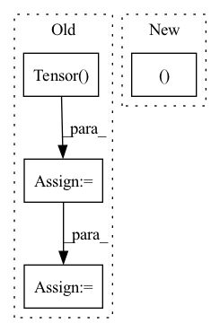

Pattern ID :528
Before Change
raw_wi : separated tensor along batch dimension of back; (B=1, I=32*32, O=128, KH=4, KW=4)
"""
// conv for compare
escape_NaN = torch.Tensor( [1e-4])
escape_NaN = escape_NaN.to(device)
wi = wi[0] // [L, C, k, k]
max_wi = torch.sqrt(
torch.sum(torch.pow(wi, 2) + escape_NaN, dim=[1, 2, 3], keepdim=True))After Change
// background for matching and use original background for reconstruction.
f = downsampling_nn_tf(f, n=self.rate)
b = downsampling_nn_tf(b, n=self.rate)
int_fs, int_bs = list(f.size()), list(b.size()) // b*c*h*w
// split tensors along the batch dimension
f_groups = torch.split(f, 1, dim=0)
// w shape: [N, C*k*k, L]In pattern: SUPERPATTERN
Frequency: 4
Non-data size: 4
Instances Fragment ID: 1941789
Project Name: nipponjo/deepfillv2-pytorch
Commit Name: b56ad8569aeea17343cedc9c7331223e134c228f
Time: 2021-12-02
Author: 28433296+nipponjo@users.noreply.github.com
File Name: model/networks_tf.py
M Class Name: ContextualAttention
N Class Name: ContextualAttention
M Method Name: forward(4)
N Method Name: forward(4)
M Parent Class: nn.Module
N Parent Class: nn.Module
M File Name: model/networks_tf.py
N File Name: model/networks_tf.py
M Start Line: 309
M End Line: 467
N Start Line: 338
N End Line: 464
Before Change
def forward(self, x, rois, roi_indices):
roi_indices = torch.Tensor(roi_indices).float()
rois = torch.Tensor( rois) .float()
if x.is_cuda:
roi_indices = roi_indices.cuda()
rois = rois.cuda()
indices_and_rois = torch.cat([roi_indices[:, None], rois], dim=1)
xy_indices_and_rois = indices_and_rois[:, [0, 1, 2, 3, 4]]
indices_and_rois = xy_indices_and_rois.contiguous()
// 利用建议框对公用特征层进行截取
pool = self.roi(x, indices_and_rois)
fc7 = self.classifier(pool)
After Change
self.roi = RoIPool((roi_size, roi_size), spatial_scale)
def forward(self, x, rois, roi_indices, img_size):
n, _, _, _ = x.shape
if x.is_cuda:
roi_indices = roi_indices.cuda()
rois = rois.cuda()
Fragment ID: 1941817
Project Name: bubbliiiing/faster-rcnn-pytorch
Commit Name: d456f02a402fd8cf8db1d991aa612439b3c0ffb2
Time: 2021-01-30
Author: 47347516+bubbliiiing@users.noreply.github.com
File Name: nets/classifier.py
M Class Name: Resnet50RoIHead
N Class Name: Resnet50RoIHead
M Method Name: forward(5)
N Method Name: forward(4)
M Parent Class: nn.Module
N Parent Class: nn.Module
M File Name: nets/classifier.py
N File Name: nets/classifier.py
M Start Line: 68
M End Line: 77
N Start Line: 82
N End Line: 107
Before Change
raw_wi : separated tensor along batch dimension of back; (B=1, I=32*32, O=128, KH=4, KW=4)
"""
// conv for compare
escape_NaN = torch.Tensor( [1e-4])
escape_NaN = escape_NaN.to(device)
wi = wi[0] // [L, C, k, k]
//max_wi = torch.max(torch.sqrt(torch.sum(wi**2, dim=[1, 2, 3], keepdim=True)), escape_NaN)After Change
mode="nearest", recompute_scale_factor=False)
b = F.interpolate(b, scale_factor=1./self.rate,
mode="nearest", recompute_scale_factor=False)
int_fs, int_bs = list(f.size()), list(b.size()) // b*c*h*w
// split tensors along the batch dimension
f_groups = torch.split(f, 1, dim=0)
// w shape: [N, C*k*k, L] Fragment ID: 1941780
Project Name: nipponjo/deepfillv2-pytorch
Commit Name: b56ad8569aeea17343cedc9c7331223e134c228f
Time: 2021-12-02
Author: 28433296+nipponjo@users.noreply.github.com
File Name: model/networks.py
M Class Name: ContextualAttention
N Class Name: ContextualAttention
M Method Name: forward(4)
N Method Name: forward(4)
M Parent Class: nn.Module
N Parent Class: nn.Module
M File Name: model/networks.py
N File Name: model/networks.py
M Start Line: 333
M End Line: 482
N Start Line: 352
N End Line: 474
Before Change
def forward(self, x, rois, roi_indices):
roi_indices = torch.Tensor(roi_indices).float()
rois = torch.Tensor( rois) .float()
if x.is_cuda:
roi_indices = roi_indices.cuda()
rois = rois.cuda()
indices_and_rois = torch.cat([roi_indices[:, None], rois], dim=1)
xy_indices_and_rois = indices_and_rois[:, [0, 1, 2, 3, 4]]
indices_and_rois = xy_indices_and_rois.contiguous()
// 利用建议框对公用特征层进行截取
pool = self.roi(x, indices_and_rois)
pool = pool.view(pool.size(0), -1)
After Change
self.roi = RoIPool((roi_size, roi_size), spatial_scale)
def forward(self, x, rois, roi_indices, img_size):
n, _, _, _ = x.shape
if x.is_cuda:
roi_indices = roi_indices.cuda()
rois = rois.cuda()
Fragment ID: 1941777
Project Name: bubbliiiing/faster-rcnn-pytorch
Commit Name: d456f02a402fd8cf8db1d991aa612439b3c0ffb2
Time: 2021-01-30
Author: 47347516+bubbliiiing@users.noreply.github.com
File Name: nets/classifier.py
M Class Name: VGG16RoIHead
N Class Name: VGG16RoIHead
M Method Name: forward(5)
N Method Name: forward(4)
M Parent Class: nn.Module
N Parent Class: nn.Module
M File Name: nets/classifier.py
N File Name: nets/classifier.py
M Start Line: 31
M End Line: 39
N Start Line: 33
N End Line: 59